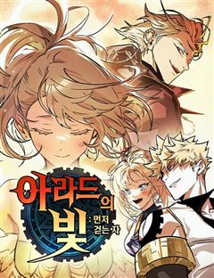

99강화나무몽둥이 같은 웹툰 추천

99강화나무몽둥이 · 홍실 / 지페리
99강화나무몽둥이 재밌게 봤다면 이 웹툰들도 좋아할 거예요. 같은 장르이면서 유혹녀, 아이돌, 헌터물 같은 요소가 겹치는 작품을, 겹치는 요소가 많은 순서로 20개 골랐어요.
2026-10-05 기준 · 네이버웹툰·카카오웹툰·레진코믹스 · 성인 작품 제외
내 취향으로 직접 골라 추천받기 →-
1
 네이버웹툰
네이버웹툰디펜스 게임의 폭군이 되었다
타워디펜스&던전오펜스 RPG <제국을 지켜라> 누구도 클리어하지 못한 난이도로 게임의 엔딩을 봤다. 그런데 정신을 차리니 게임 속이다. 그것도 공략이 불가능한 튜토리얼 스테이지다. "반드시 클리어해 주마, 이 거지 같은 게임……!"
헌터물고인물차원이동게임판타지네이버웹툰에서 보기 → -
2
 네이버웹툰
네이버웹툰나 혼자 만렙 뉴비
게임 너튜버로 활동 중인 주인공 진혁은 유일하게 [시련의 탑]의 엔딩을 봤지만, 게임의 인기가 하락하며 더 이상 게임 너튜버로서의 삶도 유지하기 힘들어진다. 엔딩을 보았기에 이대로 게임을 마무리하려는 진혁. 바로 그날, [시련의 탑]은 현실이 되었다…
헌터물고인물게임게임판타지판타지네이버웹툰에서 보기 → · 나 혼자 만렙 뉴비 같은 웹툰 → -
3
 네이버웹툰
네이버웹툰회귀자의 은퇴 라이프
2018년 퍼스트 게이트가 열린 이후, 여러 차원이 연결된 지구에서 임대인은 20년간 살아남았다. 마침내 맞이한 은퇴식 다음날, 아무것도 없는 20년 전으로 회귀하게 되는데…
헌터물고인물차원이동인외존재판타지네이버웹툰에서 보기 → -
4
 네이버웹툰
네이버웹툰사시미 한 자루로 아카데미를 씹어먹음
‘베면 잘릴 것입니다.’ 전국 최고의 칼잡이라고 불리던 내가 과금 몇 번 해본 모바일 게임에 떨어졌다. 무려 '검신(劍神)의 가호'를 부여받고⋯! 그런데⋯ 사용할 수 있는 무장이 고작 사시미뿐이라고? 하루에 단 1분. 나는 사시미로 검성이 된다.
헌터물게임게임판타지인외존재판타지네이버웹툰에서 보기 → -
5
 네이버웹툰
네이버웹툰강철을 먹는 플레이어
강철대제 이현욱, 인류의 마지막 구원자인 그가 죽었다. 미래를 바꾸기 위해 그가 회귀한 곳은… 군대?!! 왜 하필 여기냐고!” 복수를 위해 특급 성장하는 이현욱 상병의 강철 먹방이 시작된다!
헌터물힘숨찐고인물게임판타지판타지네이버웹툰에서 보기 → -
6
 네이버웹툰
네이버웹툰세계멸망전
천마, 헌터, 거대 로봇, 마왕, 초인. 각 세계의 존망을 걸고 한자리에 모인 최강자들. 패배의 대가는 오직 세계의 멸망뿐인 생존 전쟁 속, 유일하게 아무런 능력도 없는 '일반 세계' 대표들이 끌려온다. 규격 외 괴물들의 압도적인 무력에 짓밟히기 직…
힘숨찐고인물게임게임판타지판타지네이버웹툰에서 보기 → -
7
 네이버웹툰
네이버웹툰전지적 독자 시점
'이건 내가 아는 그 전개다' 한순간에 세계가 멸망하고, 새로운 세상이 펼쳐졌다. 오직 나만이 완주했던 소설 세계에서 평범했던 독자의 새로운 삶이 시작된다.
헌터물게임게임판타지먼치킨판타지네이버웹툰에서 보기 → · 전지적 독자 시점 같은 웹툰 → -
8
 네이버웹툰
네이버웹툰히든클래스 중력자로 최강을 노린다
일본 네이버 웹툰(라인망가) 소년/판타지 부문 TOP10! "S급 헌터인 나였기에 중력자야말로 최강 클래스라는 걸 알고 있다." 몬스터가 습격해 오는 현대 사회. 도적 클래스를 보유하고 있던 이코마는 능력 제한으로 인해 남들보다 뒤처지게 되었다. 하…
헌터물고인물인외존재먼치킨판타지네이버웹툰에서 보기 → -
9
 네이버웹툰
네이버웹툰게임 속 바바리안으로 살아남기
지금껏 아무도 클리어하지 못한 게임 [던전 앤 스톤]을 9년간 플레이한 끝에 최종 보스 스테이지에 도달한 이한수. 그러나 보스 방에 입장함과 동시에, 튜토리얼 완료라는 멘트와 함께 [던전 앤 스톤] 속 바바리안 '비요른 얀델'에 빙의하게 된다. 도시…
차원이동게임게임판타지인외존재판타지네이버웹툰에서 보기 → -
10
 네이버웹툰
네이버웹툰히든 특성 13개 들고 시작한다
게임과 현실이 하나가 되어가는 세상. 히든 특성 13개 들고 시작하는 한 남자의 이야기.
고인물게임게임판타지먼치킨판타지네이버웹툰에서 보기 → -
11

네이버웹툰아라드의 빛: 먼저 걷는 자
아라드에 퍼진 오염을 정화하기 위해 나를 소환했다…? 던전앤파이터에 인생을 바친 유저 진성. 초월자 네메르에 의해 아라드에 소환되어 부집게의 사명을 부여받는다. 『그대는 부집게가 되어 칼날을 올바른 시련으로 인도하라.』 "부집게든 뭐든 되어줄게. 나…
고인물차원이동게임판타지사이다판타지네이버웹툰에서 보기 → -
12
 네이버웹툰
네이버웹툰리턴 투 플레이어
어느 날, 게임이 되어버린 세상. 갑자기 나타난 몬스터들이 사람들을 죽이고, 사람들은 플레이어가 되어 퀘스트를 달성해야 한다! 인류의 종말에서 회귀한 2회차 플레이어, 김세한. 그는 과연 세상을 이렇게 만든 '시스템'을 쳐부술 수 있을까!
게임게임판타지인외존재먼치킨판타지네이버웹툰에서 보기 → -
13
 네이버웹툰
네이버웹툰어떻게 용사 이름이 아아아아
상자와 항아리만 보면 부수고, 남의 집 서랍을 뒤지는 용사에게 평범한 마을주민이 동료로 선택받았다! 과연 이딴 용사가 마왕을 무찌르고 세상을 구할 수 있을까?
고인물게임게임판타지판타지일상·개그네이버웹툰에서 보기 → -
14
 네이버웹툰
네이버웹툰신화급 귀속 아이템을 손에 넣었다
D급 무투계 레이더로 마법계 레이더들의 고기방패나 하며 별 볼 일 없이 살던 재현. 그러던 어느 날, 던전에서 우연히 "오딘의 눈" 이라는 최강의 귀속 아이템을 얻게 됐다. 신의 눈을 가진 자, 세계를 구할 신의 대적자의 운명을 개척하라!
헌터물게임판타지먼치킨사이다판타지네이버웹툰에서 보기 → · 신화급 귀속 아이템을 손에 넣었다 같은 웹툰 → -
15
 네이버웹툰
네이버웹툰언스탯
이세계로 전송된 무협 최강의 남자 ‘아수라’ 오직 무력만으로 정점에 선 그는 오직 자신의 손만으로 스탯창과 탑을 부수며 플레이어로서의 참가를 거절한다.
병맛차원이동먼치킨판타지일상·개그네이버웹툰에서 보기 → -
16
 네이버웹툰
네이버웹툰약 파는 황태자
내가 황태자라고? 소설 속 병약요절한 그 황태자? 그런데 나, 한의사인데? 어쩔 수 없다. 체질개선, 원기회복, 자양강장, 활력증진까지. 이제부터 내 몸은 내가 챙긴다.
병맛고인물개그판타지일상·개그네이버웹툰에서 보기 → -
17

-
18
 네이버웹툰
네이버웹툰세상도 구해본 놈이 잘 구한다
이세계를 구했더니, 지구가 더 막장이었다. 하지만 걱정 마라. 세상 구해본 놈이, 한 번 더 구한다.
헌터물고인물차원이동판타지네이버웹툰에서 보기 → -
19
 네이버웹툰
네이버웹툰뼈왕
낯선 이세계에 떨어지게 된 정형외과 의사 이대환. 그는 뼈를 조립하여 해골을 되살릴 수 있는 능력을 발견한다. 그렇게 살려낸 수많은 해골들의 지지 속에 뼈왕으로 등극! 하지만 행복도 잠시. 전투 중에 생명과도 같은 오른팔을 잃게 되고, 오른팔을 되찾…
병맛차원이동개그판타지일상·개그네이버웹툰에서 보기 → -
20
 네이버웹툰
네이버웹툰어느 마법사의 식당
요리사를 꿈꾸던 내가 사고로 이세계에 떨어졌다. 몬스터와 마법이 넘쳐나는 판타지 세계이지만 여기라고 식당을 못할 건 없잖아? 그러나 전쟁으로 인해 이세계에 들어오자마자 군대에 끌려가게 되고, 15년간의 고생 끝에 드디어 나만의 식당을 열게 되는데...
힘숨찐차원이동게임판타지판타지네이버웹툰에서 보기 →